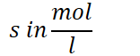

Solubility-Equilibria
Solubility Equilibria
-
Solubility: (S) Amount of salt that will dissolve to form a saturated solution at a given temperature
-
{width="1.625in" height="0.65625in"}
-
 {width="6.322916666666667in" height="0.3541666666666667in"}
{width="6.322916666666667in" height="0.3541666666666667in"}-
Ions are the PRODUCT
-
Solid is the REACTANT
-
-
 {width="4.75in" height="0.5in"}
{width="4.75in" height="0.5in"}
-
-
Typical "Insoluble" salts are really slightly soluble
-
They just don't dissolve very much
-
 {width="5.864583333333333in" height="0.3541666666666667in"}
{width="5.864583333333333in" height="0.3541666666666667in"}-
 {width="2.9895833333333335in" height="0.6979166666666666in"}
{width="2.9895833333333335in" height="0.6979166666666666in"}- {width="4.385416666666667in" height="0.3541666666666667in"}
-
-
-
Solubility and ICE table
| Reaction |  {width="1.875in" height="0.3333333333333333in"} {width="1.875in" height="0.3333333333333333in"} |
 {width="1.46875in" height="0.3333333333333333in"} {width="1.46875in" height="0.3333333333333333in"} |
 {width="1.65625in" height="0.34375in"} {width="1.65625in" height="0.34375in"} |
|---|---|---|---|
| Initial | Some solid | 0 | 0 |
| Change | Evidence that | +2S | +S |
| Equilibrium | Solution is saturated | 2S | S |
-
{width="6.552083333333333in" height="0.3854166666666667in"}
- 2 shows up twice: mole ratio and definition of equilibrium constant
-
ICE TABLES PRODUCT MOLES
-
 {width="6.708333333333333in" height="0.5in"}
{width="6.708333333333333in" height="0.5in"}- Convert to grams if needed
<!-- -->
-
Common ion ratios:
| 1:1 | NaCl | {width="2.7708333333333335in" height="0.375in"} |
|---|---|---|
| 1:2 | Cu(IO |
{width="3.3854166666666665in" height="0.34375in"} |
| 1:3 | Cr(OH) |
 {width="3.5208333333333335in" height="0.375in"} {width="3.5208333333333335in" height="0.375in"} |
| 2:3 | Mg |
{width="5.760416666666667in" height="0.3854166666666667in"} |
- Make sure to account for parenthesis: square/cube the coefficients
Q and solubility
-
Comparing salt solubility
-
 {width="4.75in" height="0.375in"}
{width="4.75in" height="0.375in"}-
Assume these salts are 100% soluble unless given/required a K value
-
No clear boundary from insoluble to soluble: read question given!
-
-
 {width="9.833333333333334in" height="0.375in"}
{width="9.833333333333334in" height="0.375in"}-
Approach only works for equal ion salts
-
 {width="2.90625in" height="0.3541666666666667in"}
{width="2.90625in" height="0.3541666666666667in"}- Calculating using method above
-
Different powers involved when comparing different salts with different subscripts
-
-
-
Will a precipitate form?
-
The precipitate is the reactant; ions are a product
- Solubility product
-
{width="5.833333333333333in" height="0.375in"}
-
{width="9.770833333333334in" height="0.7083333333333334in"}
-
{width="9.770833333333334in" height="0.7083333333333334in"}
-
-
 {width="10.145833333333334in" height="0.7291666666666666in"}
{width="10.145833333333334in" height="0.7291666666666666in"} -
 {width="10.1875in" height="0.3541666666666667in"}
{width="10.1875in" height="0.3541666666666667in"}- When adding volume, concentrations will change
-